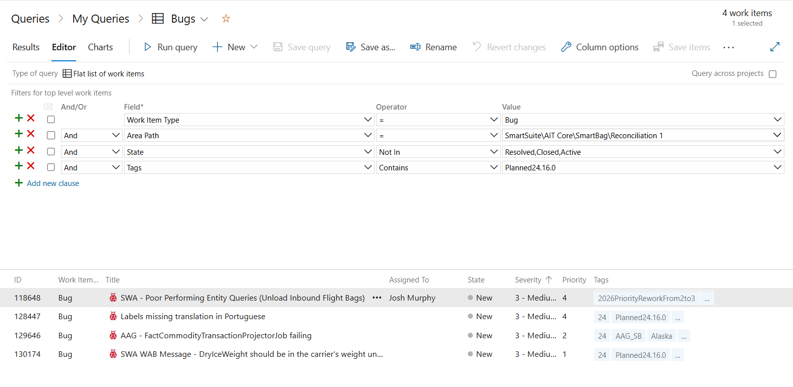
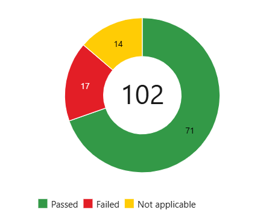
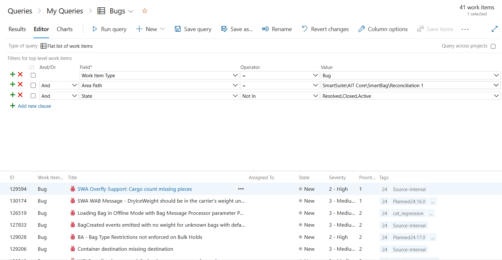

Wesley Renaud wrenaud@uoguelph.ca
Work Sample
Alongside larger features, a substantial part of this work term involved smaller changes and
bug work in the context of SmartSuite's release process. SmartSuite has monthly releases, plus
occasional hot fixes. Ahead of a release, bugs are tagged as planned for that release, for
example Planned24.xx.0. Staying on top of those cycles, and being proactive with
time-sensitive high-priority bugs, was one of the biggest challenges of the term.
Each release cycle includes a board of bugs planned for that version. Querying by tags such
as Planned24.16.0 or Planned24.17.0 made it possible to see what
needed to land before the release, and to prioritize work accordingly. Some bugs were also
tagged as regression-related, which helped separate ongoing backlog items from issues found
during the release testing window.

Each release also has a regression cycle: a period that typically lasts a few days where developers and QA on the team pause feature work and run regression tests. Those tests are selected based on the features included in the release. The team evaluates which functionality, areas of the app, and modules were touched by the changes and therefore pose a higher risk of regression.
Sometimes high-priority regression bugs are identified during that window and must be addressed before release. That creates a short, high-pressure period where communication, prioritization, and careful testing matter as much as the fix itself.

Outside the narrow regression window, I also spent time tracking open bugs for the Reconciliation team area, reviewing severity and priority, and identifying which items were already planned for upcoming releases. That habit made it easier to jump between feature work and release support without losing track of what was time-sensitive.

Working in SmartSuite also reinforced several lessons about making changes safely in a large, monolithic, production codebase: